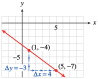

SubsectionPoint-Slope Form
We can find an equation for a line if we know its slope and \(y\)-intercept. What if we do not know the \(y\)-intercept, but instead know some other point on the line? There is only one line that passes through a given point and has a given slope, so we should be able to find an equation for this line.
For example, we can graph the line of slope \(\dfrac{-3}{4}\) that passes through the point \((1, -4)\text{.}\) We first plot the given point, \((1, -4)\text{,}\) as shown in Figure93.
Then we use the slope to find another point on the line. The slope is
\begin{equation*}
m =\frac{-3}{4}= \frac{\Delta y}{\Delta x}
\end{equation*}
so we move down \(3\) units and then \(4\) units to the right, starting from \((1, -4)\text{.}\) This brings us to the point \((5, -7)\text{.}\) We can then draw the line through these two points.

Figure93
We can also find an equation for the line, as shown in Example94.
Example94
Find an equation for the line that passes through \((1, -4)\) and has slope \(\dfrac{-3}{4}\text{.}\)
SolutionWe will use the formula for slope,
\begin{equation*}
m = \frac{y_2 - y_1}{x_2 - x_1}.
\end{equation*}
We substitute \(\dfrac{-3}{4}\) for the slope, \(m\text{,}\) and \((1, -4)\) for \((x_1, y_1)\text{.}\) For the second point, \((x_2, y_2)\text{,}\) we use the variable point \((x, y)\text{.}\) Substituting these values into the slope formula gives us
\begin{equation*}
\frac{-3}{4}= \frac{y - (-4)}{x - 1}=\frac{y + 4}{x - 1}.
\end{equation*}
To solve for \(y\) we first multiply both sides by \(x - 1\text{.}\) \begin{align*} \alert{(x-1)}\frac{-3}{4}\amp =\frac{y +4}{x - 1}\alert{(x-1)} \amp\amp\\ \frac{-3}{4}(x-1)\amp=y+4 \amp\amp\text{Apply the distributive law.}\\ \frac{-3}{4}x+\frac{3}{4}\amp=y+4 \amp\amp \text{Subtract 4 from both sides.}\\ \frac{-3}{4}x-\frac{13}{4}\amp=y \amp\amp \frac{3}{4}-4=\frac{3}{4}-\frac{16}{4}=\frac{-13}{4} \end{align*} An equation of the line is \(y=\dfrac{-13}{4}-\dfrac{3}{4}x.\)
When we use the slope formula in this way to find an equation of a line, we substitute a variable point \((x, y)\) for the second point. This version of the formula,
\begin{equation*}
m = \frac{y - y_1}{x - x_1}
\end{equation*}
is called the point-slope form for a linear equation. It is sometimes stated in another form obtained by clearing the fraction to get \begin{align*} \alert{(x-x_1)}m\amp =\frac{y -y_1}{x - x_1}\alert{(x-x_1)} \amp\amp \text{Multiply both sides by }(x - x_1)\\ (x - x_1) m\amp=y-y_1 \amp\amp\text{Clear fractions and solve for }y\text{.}\\ y\amp=y_1+m(x-x_1). \end{align*}
Point-Slope Form
An equation of the line that passes through the point \((x_1, y_1)\) and has slope \(m\) is
\begin{equation*}
y= y_1 + m(x- x_1).
\end{equation*}
Exercise95
Use the point-slope form to find an equation of the line that passes through the point \((-3, 5)\) and has slope \(-1.4\text{.}\) \begin{align*} y \amp= y_1 + m(x - x_1) \amp\amp\text{Substitute }-1.4\text{ for }m\text{ and }(-3, 5)\text{ for }(x_1, y_1).\\ \amp\amp\amp\text{Simplify: Apply the distributive law.} \end{align*}
The point-slope form is useful for modeling linear functions when we do not know the initial value but do know some other point on the line.
Example96
Under a proposed graduated income tax system, single taxpayers would owe $1500 plus 20% of the amount of their income over $13,000. (For example, if your income is $18,000, you would pay $1500 plus 20% of $5000.)
-
Complete the table of values for the tax, \(T\text{,}\) on various incomes, \(I\text{.}\)
| \(I\) |
\(15,000\) |
\(20,000\) |
\(22,000\) |
| \(T\) |
|
|
|
- Write a linear equation in point-slope form for the tax, \(T\text{,}\) on an income \(I\text{.}\)
- Write the equation in slope-intercept form.
Solution
-
On an income of $15,000, the amount of income over $13,000 is $15,000 - $13,000 = $2000, so you would pay $1500 plus 20% of $2000, or
\begin{equation*}
T = 1500 + 0.20(2000) = 1900.
\end{equation*}
You can compute the other function values in the same way.
| \(I\) |
\(15,000\) |
\(20,000\) |
\(22,000\) |
| \(T\) |
\(1900\) |
\(2900\) |
\(3300\) |
- On an income of \(I\text{,}\) the amount of income over $13,000 is \(I - \$13,000\text{,}\) so you would pay $1500 plus 20% of \(I - 13,000\text{,}\) or
\begin{equation*}
T = 1500 + 0.20 (I - 13,000).
\end{equation*}
- Simplify the right side of the equation to get \begin{align*} T \amp = 1500 + 0.20I - 2600\\ T \amp = -1100 + 0.20I. \end{align*}
Exercise97
A healthy weight for a young woman of average height, 64 inches, is 120 pounds. To calculate a healthy weight for a woman taller than 64 inches, add 5 pounds for each inch of height over 64.
Write a linear equation in point-slope form for the healthy weight, \(W\text{,}\) for a woman of height, \(H\text{,}\) in inches.
Write the equation in slope-intercept form.